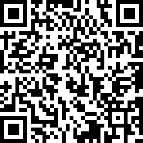

学院通知 · 校园活动
关于举办四川大学2025年寒假留校学生新春趣味定向游园联欢活动的通知
发布时间：2025-01-19
校园聚福盈新岁，团结如亲共守家。为了让留校学生度过一个温暖幸福、年味浓郁的春节，学校将于 1 月 22 日在望江校区举办“蜀地春韵青螣动，锦江川才绘辰章 ” ——四川大学 2025 年寒假留校学生新春趣味定向游园联欢活动。现将活动相关事项通知如下： 一、活动时间： 1 月 22 日 13 点 二、活动地点： 望江校区中华文化研究院 三、活动主题： 蜀地春韵青螣动，锦江川才绘辰章 四、活动形式 ： （一）新春趣味定向游园活动 1. 活动时间 ： 13:00 —— 14:45 2. 地点：望江校区（详见当天领取的活动地图） 3. 活动内容： （ 1 ）新年景观篇。活动设有江姐纪念馆、毛主席塑像、明德楼、吴玉章塑像等景观打卡点，完成打卡即可获得对应积分。 （ 2 ）新年国潮篇。现场设有国潮服饰和国潮乐器展示体验区，同学们穿着国潮（民族）服饰参加活动、使用国潮（民族乐器）表演，可获得积分；此外，围炉煮茶、猜灯谜等也有机会获得积分。 （ 3 ）知识竞答篇。围绕党的二十届三中全会，涵盖中国共产党党史、新中国史、改革开放史、社会主义发展史、中华民族发展史、校史文化、新年习俗（活动手册可找到答案）、校歌吟唱等内容，同学们参加答题获得积分或奖品。 （ 4 ）新年美食篇。现场设有新年美食集市，同学们可以在品尝各类美食的同时，参与吹糖人、包水饺汤圆、画糖画等美食制作打卡积分。 （ 5 ）新年手作篇。现场设有写春联、剪窗花、画年画、画扇面、画油纸伞等传承类文化体验区域，同学们可现场参与体验。 （ 6 ）新年拾趣篇。同学们可以体验套圈、跳房子、木射、投壶、蹴鞠、滚铁环、攀树等运动。 （ 7 ）新年联欢篇。同学们入门主会场、朋友圈分享活动、咸临茶馆与大咖互动。 4. 活动参与流程 （ 1 ）学生可以在 1 月 21 日 18 点前扫描下方二维码或者点击报名链接： https://service.scu.edu.cn/v2/matter/start?id=517 ，通过微服务平台进行报名，本次活动以团队形式参与，三人一队，同学们可提前组队或者在活动现场自由组合均可。请报名同学加入“ 2025 年新春趣味游园活动群”，同学们也可通过 QQ 群寻找队友， QQ 群号： 337917823 。 （报名二维码） （ 2025 年新春趣味游园活动QQ群） （ 2 ）学生报名后，可凭报名号码和本人学生证（或其他有效学生证件），以团队为单位于 13:00 在活动起点张澜校长塑像处领取地图、指卡参与活动。 （ 3 ）根据地图，团队三人分工合作完成打卡任务获得积分。 （ 4 ）整个活动有效时间为 60 分钟，活动关门时间为 14:45 。同学们务必计算好返回终点时间，每超时一分钟总分扣分 2 分直至总分为零。所有人必须在 14:45 前回到终点，并在成绩统计处打印成绩条（ 15:00 联欢会开始后不再打印成绩条，成绩条为兑奖唯一凭证）。 5. 积分奖项及奖品设置 特等奖：团队 1 支，积分最高且用时最少的参与团队，奖品为小米平板 1 部 / 人。 一等奖，团队 12 支，积分排名第 2-13 名的参与团队；二等奖，团队 32 支，积分排名第 14-45 名的参与团队；三等奖，团队 40 支，积分排名第 46-85 名的参与团队。获得一二三等奖的团队到对应的一二三等红包区抽取奖品。 参与奖：团队 50 支，其他排名参与者 , 均可获得小奖品。 注：打卡点完成任务可获得积分，同学们可根据团队三人总分成绩条积分到兑换区兑换相应奖品。 （二）新春联欢活动 1. 活动时间： 15:00 2. 活动地点：望江校区中华文化研究院内 3. 活动内容： （ 1 ）观看节目：《醒狮》《川剧变脸》《金蛇狂舞》《太极》《皮金滚灯》《功夫茶艺》等。 （ 2 ）现场表演：所有参与同学如争取到现场表演机会且成功为大家表演者可获得表演奖品。 （ 3 ）抽奖活动：联欢会设三轮抽奖，每轮抽取特等奖 1 名，获得红米手机一部；一等奖 2 名，每人获得红米手表一个；二等奖 3 名，每人获得小米行李箱 1 个；三等奖 4 名，每人获得书包一个。 注：抽奖环节的特等奖、一等奖、二等奖获得者只能是学生。 （ 4 ）集体游戏：击鼓传蛇。 （三）活动分享点赞 凡报名参加当天活动的同学，在微信朋友圈分享图文并茂的活动心得，并于当日下午六点前以截图方式发至活动微信群中，点赞数前 30 名者可获得四川大学文创 U 盘一个。 （四）步数达人奖 同学们可以在当天下午三点前，将本人当天运动步数截图发至活动群，步数最高者可获得“步数达人奖”精美奖品一份。 青螣焕岁，巳巳如意。希望同学们在精彩纷呈的新春趣味定向活动、妙趣横生的游园之旅，以及欢乐洋溢的联欢会上，学习党的光辉历史、领会党的二十届三中全会精神，触摸川大百年校史文化，感知源远流长的巴蜀文化。期待同学们知年俗、品年味、寻年趣，领略新春国潮的独特魅力，积极探寻传统年俗中的浓郁年味，亲手体验传统手工艺品制作的乐趣，重拾童年纯真的快乐，品尝有滋有味的新春佳肴。祝愿同学们在 2025 年平安顺遂，喜乐常伴，挺膺担当，奋楫笃行，绽放出属于自己的华彩！ 党委学生工作部 2025 年 1 月 19 日
